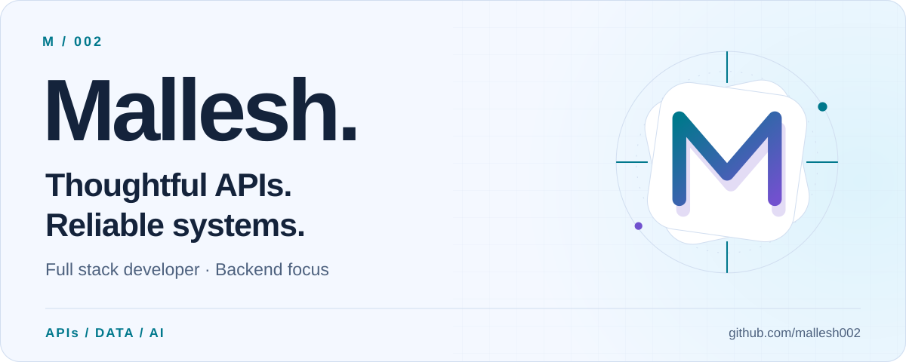
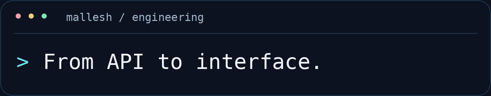
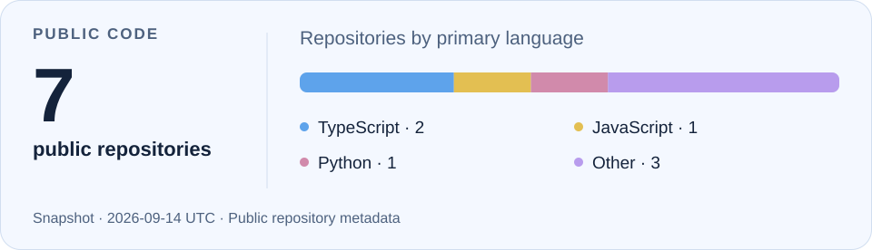

About · Stack · Work · Connect

About me
I’m Mallesh, a full stack developer with a strong backend focus. I work on career platforms that connect people with jobs, resume preparation, and interviews.
My work spans Node.js APIs, MySQL performance, search relevance, and practical AI integrations. I care about the details behind a feature: how its data is stored, how its queries behave, and how clearly another developer can understand the code.
Alongside development, I review pull requests, support deployments, and help translate requirements into practical implementation plans.
Tech stack
Backend & data
Frontend
Delivery & operations Git · GitHub Actions · AWS EC2 / RDS · PM2
Where I contribute
- Backend architecture — TypeScript APIs, clear controller and data-access boundaries, and maintainable business logic.
- Database performance — Index design, query analysis, FULLTEXT search, partitioning, archival, and batch migrations in MySQL.
- Search & AI workflows — Keyword retrieval, relevance scoring, deterministic filters, and LLM-assisted validation.
- Technical delivery — PR reviews, deployment support, production troubleshooting, and coordination across teams.
Selected engineering work
01 / Job discovery & matching
Work on pipelines that connect candidate preferences and target roles with relevant jobs. My focus includes MySQL FULLTEXT retrieval, weighted title and description relevance, experience filters, and job-expiry rules.
I’m also working on LLM-based title validation between retrieval and candidate-to-job mapping to check role alignment.
Search relevance Backend workflows AI integration
02 / MySQL performance & data lifecycle
Work on growing datasets through index tuning, monthly partitioning, archival, and separating large content fields from frequently queried records. Related work includes batch migrations and scheduled data synchronization.
The goal: keep everyday queries efficient while making data maintenance manageable.
MySQL Query optimization Data operations
03 / Resume & interview platforms
Develop backend workflows connecting candidate profiles, resume preparation, job applications, and interviews. I work across API behavior, data models, and frontend integration to turn requirements into usable features.
Node.js Drizzle ORM Full stack delivery
How I build
Understand the requirement. Model the data. Measure the query. Review the change.
I prefer clear code, explicit trade-offs, and optimizations backed by evidence. Clean architecture matters most when it makes the next change easier to understand and ship.
Public code
View my public GitHub snapshot

Language counts describe public repository metadata, not skill proficiency. View the snapshot data.
Let’s connect
Interested in backend engineering, database performance, search systems, or practical AI integrations? Let’s compare notes.